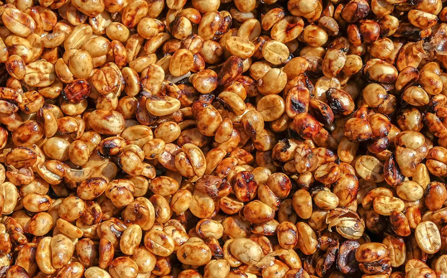

En un coup d'œil :
Process intermédiaire entre lavé et nature. On enlève la pulpe mais on garde une partie du mucilage sucré sur le grain pendant le séchage. Résultat : douceur, corps, fruité contrôlé.
Comprendre : Pourquoi ça marche
Imaginez le mucilage comme une couche de miel qui enrobe le grain après dépulpage. Cette pellicule sucrée contient environ 40% de sucres (glucose, fructose, saccharose). Pendant le séchage, trois phénomènes simultanés se produisent :
•Déshydratation progressive : l'eau s'évapore lentement (10–20 jours selon climat)
•Fermentation douce de surface : levures et bactéries transforment une partie des sucres en alcools, esters et acides
•Migration aromatique : certains composés diffusent vers l'amande à travers le parche
C'est cet équilibre délicat — ni trop fermenté (risque sour), ni trop rapide (profil plat) — qui donne au Honey sa signature : sucré, rond, fruité sans excès.
Les trois "couleurs" du Honey
La quantité de mucilage laissée détermine l'intensité :
| Type | Mucilage résiduel | Durée séchage | Profil typique |
|---|---|---|---|
| Yellow Honey | 25–50% | 8–12 jours | Propre, doux, acidité présente |
| Red Honey | 50–75% | 12–16 jours | Sucré, fruité (fruits rouges), corps moyen |
| Black Honey | 75–100% | 16–20+ jours | Très sucré, sirupeux, notes confites |
Maîtriser : Les variables critiques
Phase 1 : Dépulpage calibré
Objectif : Retirer la peau et une partie contrôlée de la pulpe sans endommager le parche.
•Réglage du dépulpeur : pression modérée, écartement ajusté selon la variété
•Contrôle visuel : le grain doit être collant et brillant (pas sec, pas trop gluant)
•Pas de lavage : on préserve tout le mucilage résiduel
⚠️ Point critique : Un mauvais réglage laisse trop de pulpe (fermentation rapide, risque sour) ou pas assez (profil proche du lavé, perte d'identité).
Phase 2 : Séchage contrôlé — les 48 premières heures
C'est LA phase décisive du Honey. Le mucilage est encore très actif microbiologiquement.
Variables à surveiller :
| Variable | Plage optimale | Impact si déviation |
|---|---|---|
| Température ambiante | 20–30°C | >35°C → fermentation accélérée, risque overripe; |
| Humidité relative | 55–65% | <45% → séchage trop rapide, perte aromatique >75% → moisissures |
| Épaisseur des couches | 2–3 cm | >5 cm → points chauds, fermentation inégale |
| Fréquence de brassage | Toutes les 30–60 min | Insuffisant → zones compactées, défauts moldy |
Ce qui se passe chimiquement :
Pendant ces 48h, les levures (principalement Saccharomyces et Pichia) métabolisent les sucres du mucilage :
•Glucose + Fructose → Éthanol + CO₂ + Esters (isoamyl-acétate, éthyl-butanoate)
•Formation de lactones (γ-decalactone) → notes pêche, abricot
•Furaneols (si température >25°C) → notes fraise, caramel
Phase 3 : Séchage avancé (J3 à J20)
Une fois l'humidité descendue sous 30%, l'activité microbienne ralentit fortement.
•Brassage : espacé à 3–4 fois/jour
•Protection : couvrir la nuit (rosée) ou en cas de pluie
•Objectif final : 10–12% d'humidité, a_w < 0,60
Indicateur visuel : Le mucilage durci forme une "croûte" marron/noire autour du parche → c'est normal et souhaité.
Phase 4 : Repos en parche
Après séchage, ne pas décortiquer immédiatement :
•Repos 4–8 semaines en sacs respirants (jute + GrainPro)
•Permet la stabilisation de l'humidité interne
•Affine les arômes (maturation enzymatique résiduelle)
Approfondir : Molécules et signature aromatique
Les cafés Honey se distinguent par une dominance d'esters fruités et de lactones, avec peu d'acides volatils (contrairement aux naturels).
Molécules clés formées pendant le process
| Molécule | Famille | Arôme | Seuil (ppb) | Origine |
|---|---|---|---|---|
| Furaneol | Furaneol | Fraise, caramel | 10–50 | Précurseurs de Maillard formés lors du séchage (mucilage + chaleur) |
| γ-Decalactone | Lactone | Pêche, abricot | 5–10 | Dégradation lipidique lente |
| Éthyl-butanoate | Ester | Ananas, mangue | 1–5 | Fermentation levurienne |
| 2-Acétylfurane | Furane | Pain chaud, miel | 50–100 | Sucres + chaleur modérée |
| Acide lactique | Acide | Douceur, texture | — | Bactéries lactiques (faible) |
Ce qui est absent (ou faible) :
•Acide acétique → pas de note vinaigre (contrairement au sour)
•Phénols lourds → pas de goût chimique
•Composés soufrés → pas de note rubbery
Comparaison sensorielle : Honey vs Autres process
| Attribut | Washed | Honey | Natural |
|---|---|---|---|
| Sucrosité | ⭐⭐ | ⭐⭐⭐⭐ | ⭐⭐⭐⭐⭐ |
| Acidité | ⭐⭐⭐⭐⭐ | ⭐⭐⭐ | ⭐⭐ |
| Corps | ⭐⭐ | ⭐⭐⭐⭐ | ⭐⭐⭐⭐⭐ |
| Clarté | ⭐⭐⭐⭐⭐ | ⭐⭐⭐⭐ | ⭐⭐ |
| Fruité | ⭐⭐ | ⭐⭐⭐⭐ | ⭐⭐⭐⭐⭐ |
En pratique : Roast tips pour Honey
Les cafés Honey demandent une approche spécifique à la torréfaction car leur structure cellulaire est plus dense (mucilage durci intégré) et leur potentiel sucrant est élevé.
Profil recommandé (Loring)
Charge : 195–200°C
Phase Drying : progressive, éviter pic ROR (risque baked)
Phase Maillard : 30–35% du temps total → développer la sucrosité
Premier Crack : vers 200–203°C
Développement : 12–14% (moyen)
Drop : 205–207°C selon densité
Pourquoi ce profil ?
•Charge modérée : préserve les esters légers (éthyl-butanoate)
•Maillard long : transforme bien les sucres résiduels → furaneols, pyrazines douces
•Développement moyen : équilibre entre sucrosité (courte) et structure (longue)
Erreurs fréquentes :
•Drop trop tôt → profil unripe, astringent (pyrazines vertes)
•Développement trop long (>16%) → perte des esters, goût boisé/sec
•Flux d'air insuffisant → surchauffe, goût cuit
Les risques et défauts typiques du Honey
| Défaut | Cause | Molécules | Comment l'éviter |
|---|---|---|---|
| Sour | Fermentation trop longue ou chaude | Acide acétique, butyrique | Brasser intensivement J1-J2, surveiller T° |
| Moldy | Séchage trop lent, humidité excessive | Géosmine, 2-MIB | Couches fines, bonne ventilation |
| Animal/Earthy | Contact avec le sol | Actinomycètes | Lits africains propres, jamais au sol |
| Overripe | Cerises surmûries à la récolte | Éthanol, acétate d'éthyle | Tri rigoureux avant dépulpage |
Ce qu’il apporte
Le Honey process apporte une sucrosité naturelle marquée, un corps plus dense qu’un lavé et une expression aromatique souvent plus fruitée, sans aller jusqu’à l’exubérance d’un café nature.
Il permet de construire des profils ronds, accessibles et expressifs, où la douceur du fruit soutient l’identité variétale et le terroir.
Bien maîtrisé, le Honey offre une bonne intensité aromatique tout en conservant une clarté de lecture supérieure à celle des naturels les plus chargés.
Il séduit aussi bien les torréfacteurs, pour sa capacité à produire des profils séduisants et lisibles, que les consommateurs, pour son équilibre entre gourmandise et fraîcheur.
Ce que cela coûte
Le Honey est un process exigeant en attention, en particulier durant les premières phases de séchage.
La présence de mucilage actif impose des retournements fréquents, une surveillance constante de la température et de l’humidité, et des surfaces de séchage parfaitement propres.
Une gestion approximative peut rapidement entraîner des dérives : fermentation excessive, notes sour, moldy ou overripe.
Le Honey demande également plus de main-d’œuvre que le lavé, ainsi qu’une lecture fine des conditions climatiques, car le séchage reste très sensible aux variations d’humidité et de température.
Comment cela fonctionne, en résumé
Après dépulpage, une quantité contrôlée de mucilage sucré est volontairement conservée sur le grain.
Pendant le séchage, cette couche agit comme un substrat fermentescible et une protection, favorisant une fermentation de surface douce et progressive, tout en accompagnant la déshydratation du grain.
L’équilibre repose sur la maîtrise conjointe de la vitesse de séchage et de l’activité microbienne : suffisamment lente pour construire la sucrosité et la texture, mais suffisamment contrôlée pour éviter toute dérive fermentaire.
Les résultats obtenus
Lorsqu’il est bien exécuté, le Honey donne un café sucré, rond et expressif, avec des notes de fruits mûrs, de miel ou de caramel, un corps soyeux et une acidité douce.
Il constitue un excellent compromis entre complexité aromatique et lisibilité, offrant une tasse vivante mais maîtrisée.
Conclusion : Le Honey comme équilibre
Le Honey process incarne un compromis maîtrisé :
✅ La clarté du lavé (on retire la pulpe)
✅ La richesse du natural (on garde le sucre du mucilage)
✅ Une répétabilité supérieure (moins de variables que le natural)
C'est cette position intermédiaire qui en fait un process polyvalent, apprécié des torréfacteurs pour sa régularité et des consommateurs pour sa douceur accessible.
Bien exécuté, un Honey révèle la personnalité d'un terroir tout en apportant une sucrosité naturelle qui séduit sans masquer. C'est l'élégance dans la simplicité.
Le Honey process n’est ni une solution facile ni un raccourci aromatique ; c’est un équilibre volontaire, qui exige une lecture fine du contexte, des conditions et de l’intention recherchée.
💡 Pour aller plus loin
•Chapitre 4 : Chimie aromatique (formation des esters et lactones)
•Chapitre 5 : Défauts (reconnaître un Honey mal exécuté)
•Annexe : Protocoles de fermentation contrôlée pour Honey